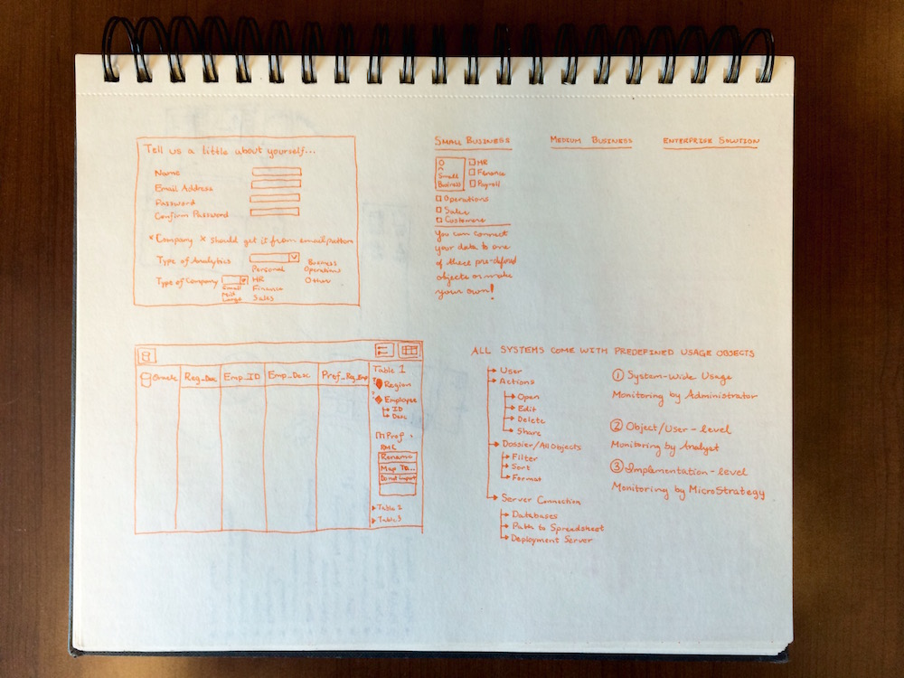
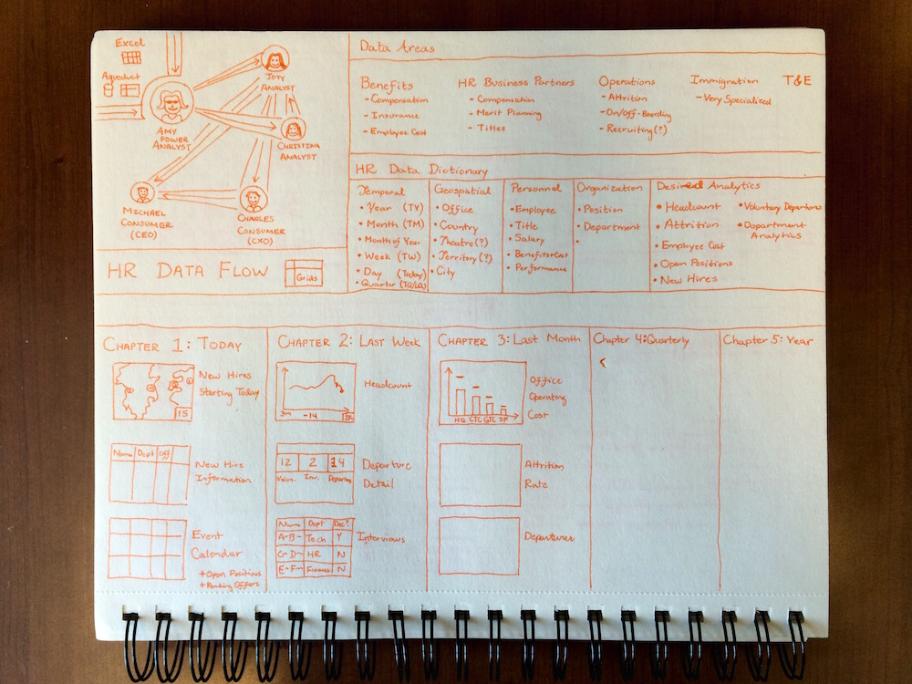
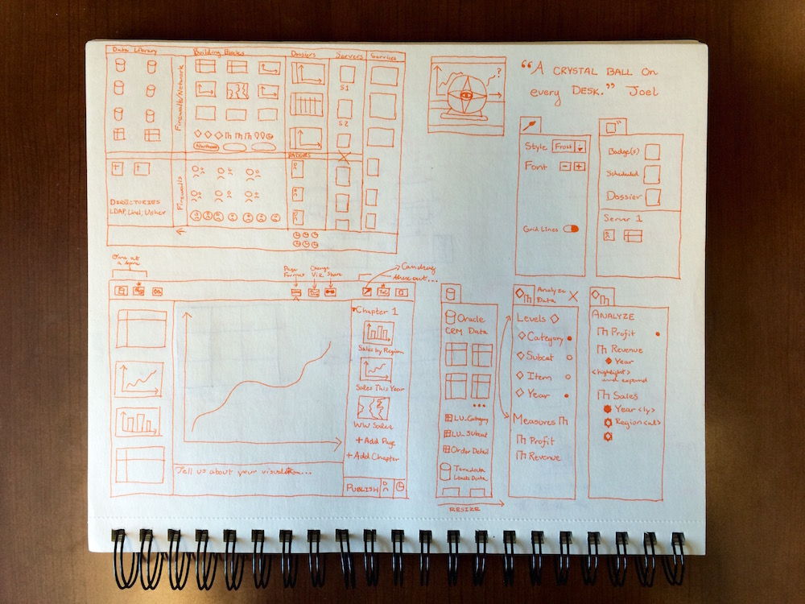
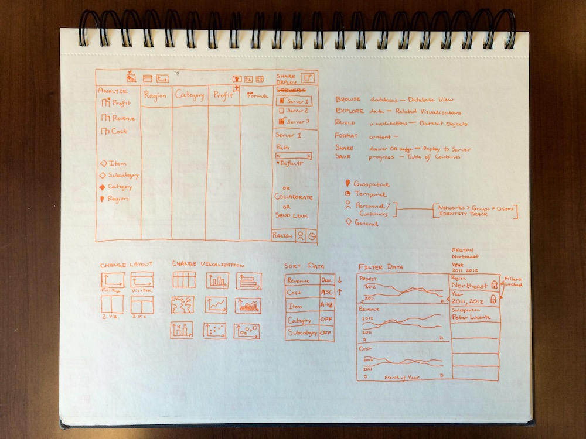
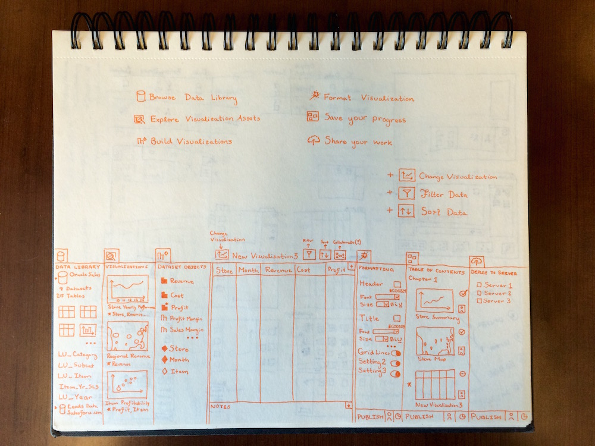

Given the system proliferation and sensitivity of data handled by the Human Resources team, I chose them as my first research subject. Prior to the first meeting, I collaborated across multiple teams to develop a short questionnaire that would help us to better understand their use cases, and made some soft hypotheses about user roles to help guide the discussion.
During the user interview, I created a freeform sketch that detailed the information they conveyed. This sketch ended up being instrumental to the conversation, as they were immediately able to correct any misapprehensions.
After documenting and disseminating feedback to the team and CEO, I decided to take a step back and examine the relationship between the new requirements and the vision statement devised by the team. From there, I examined the convergence points between the vision, the current product, and the new information about HR processes. It became clear that the requirements for better transparency and access to certain types of data was in line with the guiding principles that had been set.
As you can certainly perceive, if you are still reading this, design may not my wheelhouse, but it is a powerful communication tool. Since I had validated with myself and stakeholders the importance of this information, I went a step further to quickly examine the information architecture of the items that the HR department would expect to see on a page. Using that information, I then ideated a quick and dirty workflow that an HR business partner could theoretically follow.
While I am very much a proponent of empowering designers with information and letting them extrapolate the perfect workflow, I always find it helpful to validate my ideas by ensuring that they fit into the design of an interface. Then I am able to confidently advocate for the elements that I perceive are most important to the user and I have a good basis of understanding how and why I reached that conclusion. Word to the Wise: This step is frequently a trap for perfectionists, as the siren song of high-fidelity mockups calls out over-so-alluringly. Don't give in--this is a work in progress!
